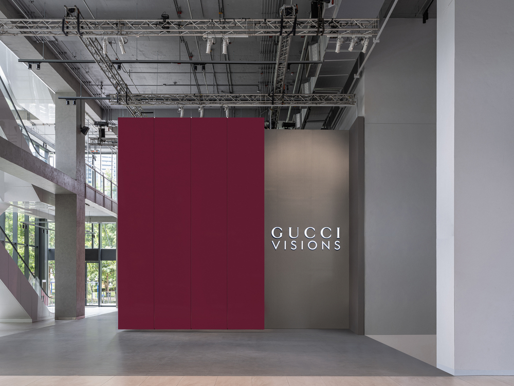
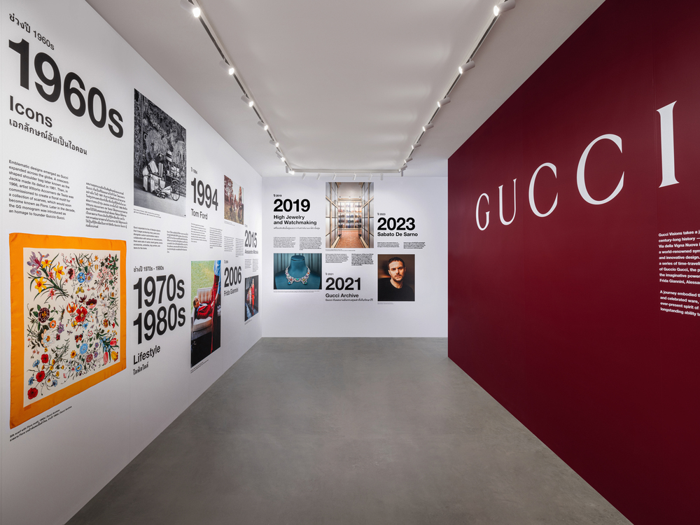
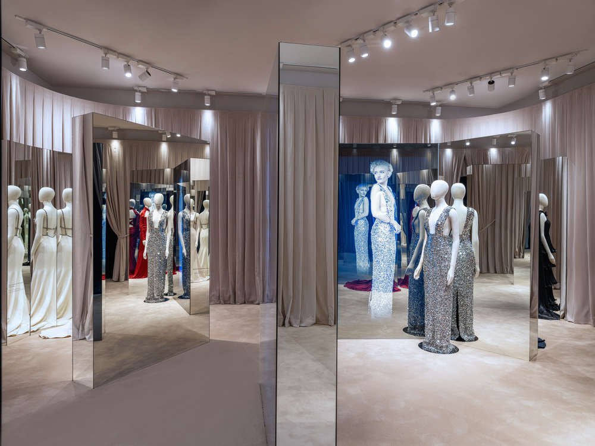
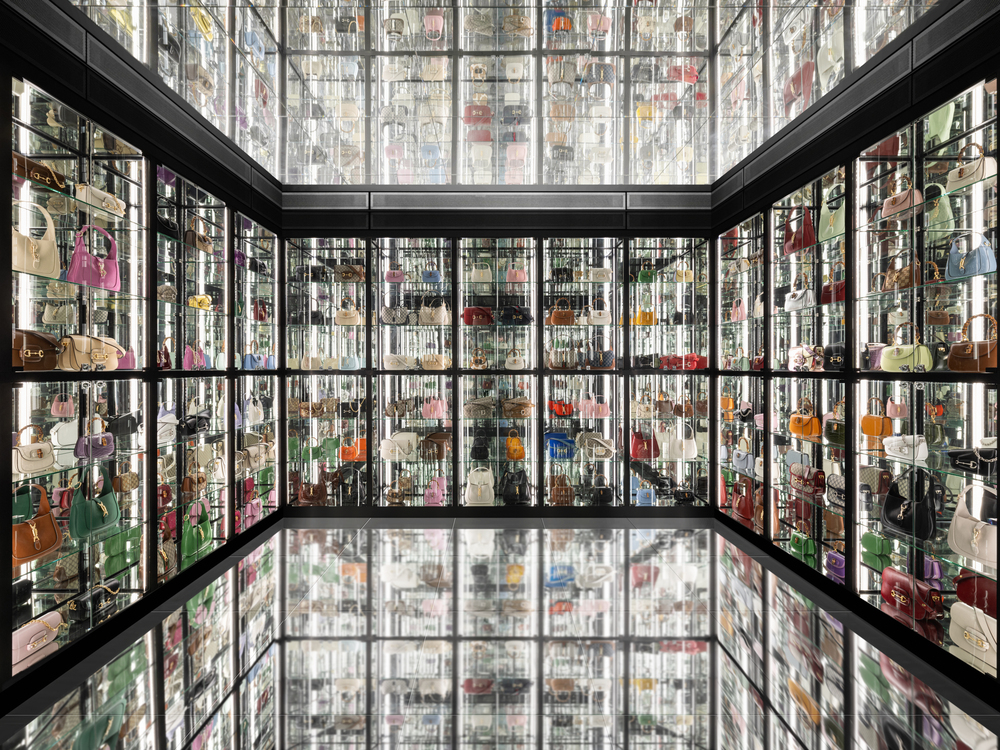
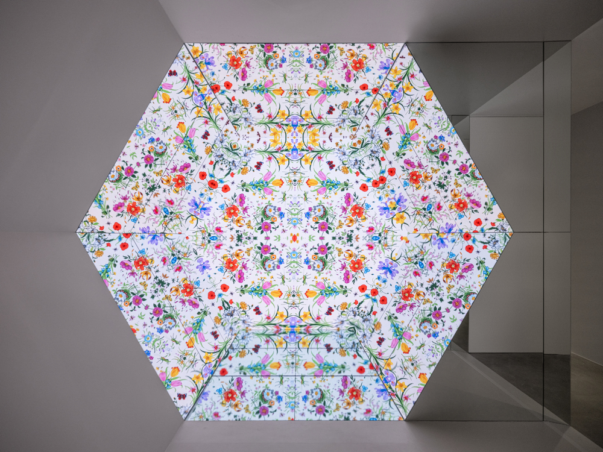

BLOGS THỜI TRANG
Kết nối với Kana! Bắt kịp nhịp đập thời trang, làm đẹp và phong cách sống.
TRIỂN LÃM GUCCI VISIONS Ở BANGKOK: HÀNH TRÌNH TRĂM NĂM LỊCH SỬ THỜI TRANG
Mang đến cái nhìn toàn cảnh về lịch sử 103 năm của thương hiệu, triển lãm Gucci Visions là sự tôn vinh sống động cho những thiết kế đặc trưng mang tính biểu tượng cũng như tài năng của các giám đốc sáng tạo và nghệ nhân trong nhiều năm qua. Bằng cách khám phá các mã di sản, triển lãm cho thấy niềm tin luôn hiện diện vào sức mạnh của sự sáng tạo và cống hiến tuyệt đối với nghề thủ công nước Ý đằng sau các thiết kế được trưng bày.

Sau khi ra mắt thành công tại Florence và Tokyo, sự kiện triển lãm đã có mặt tại Emsphere ở Bangkok, Thái Lan. Bao gồm sáu phòng theo chủ đề được tuyển chọn tỉ mỉ, triển lãm thể hiện các khía cạnh khác nhau trong câu chuyện độc đáo của nhà mốt Ý. Du khách bắt đầu cuộc hành trình xuyên qua lịch sử phong phú của thương hiệu, được hướng dẫn bởi dòng thời gian minh họa. Biên niên sử về ngày tháng, các sự kiện quan trọng và những nhân vật có ảnh hưởng tạo nên chuỗi trải nghiệm sống động.



Có thể khám phá theo bất kỳ thứ tự nào, mỗi không gian tiết lộ một khía cạnh khác nhau trong quá trình phát triển của nhà mốt Ý, làm nổi bật các chủ đề và biểu tượng đặc trưng như túi Bamboo, biểu tượng GG và họa tiết Flora. Thông qua triển lãm này, khách mời hiểu rõ hơn về nguồn gốc và tầm quan trọng của những yếu tố mang tính biểu tượng cũng như vai trò không thể thiếu của chúng đối với sức hấp dẫn lâu dài. Từ vali hành lý lấy cảm hứng từ di sản phục vụ du khách đến những bộ váy được mặc bởi những người nổi tiếng trong nhiều thập kỷ, mỗi căn phòng đều mang đến một góc nhìn độc đáo. Những chiếc túi xách, hành lý và quần áo được giám tuyển là minh chứng cho di sản nghệ thuật của nhà mốt Ý là cầu nối cho nhiều thế hệ sáng tạo. Từ tầm nhìn ban đầu của Guccio Gucci đến những đóng góp tiên phong của các con trai ông và khả năng lãnh đạo mang tính thay đổi của các giám đốc sáng tạo, triển lãm đã kết nối quá khứ và hiện tại để kỷ niệm các chương khác nhau trong lịch sử.

Có thể khám phá theo bất kỳ thứ tự nào, mỗi không gian tiết lộ một khía cạnh khác nhau trong quá trình phát triển của nhà mốt Ý, làm nổi bật các chủ đề và biểu tượng đặc trưng như túi Bamboo, biểu tượng GG và họa tiết Flora. Thông qua triển lãm này, khách mời hiểu rõ hơn về nguồn gốc và tầm quan trọng của những yếu tố mang tính biểu tượng cũng như vai trò không thể thiếu của chúng đối với sức hấp dẫn lâu dài. Từ vali hành lý lấy cảm hứng từ di sản phục vụ du khách đến những bộ váy được mặc bởi những người nổi tiếng trong nhiều thập kỷ, mỗi căn phòng đều mang đến một góc nhìn độc đáo. Những chiếc túi xách, hành lý và quần áo được giám tuyển là minh chứng cho di sản nghệ thuật của nhà mốt Ý là cầu nối cho nhiều thế hệ sáng tạo. Từ tầm nhìn ban đầu của Guccio Gucci đến những đóng góp tiên phong của các con trai ông và khả năng lãnh đạo mang tính thay đổi của các giám đốc sáng tạo, triển lãm đã kết nối quá khứ và hiện tại để kỷ niệm các chương khác nhau trong lịch sử.